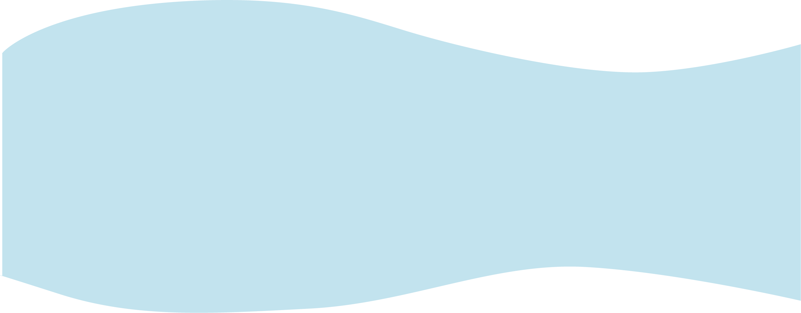
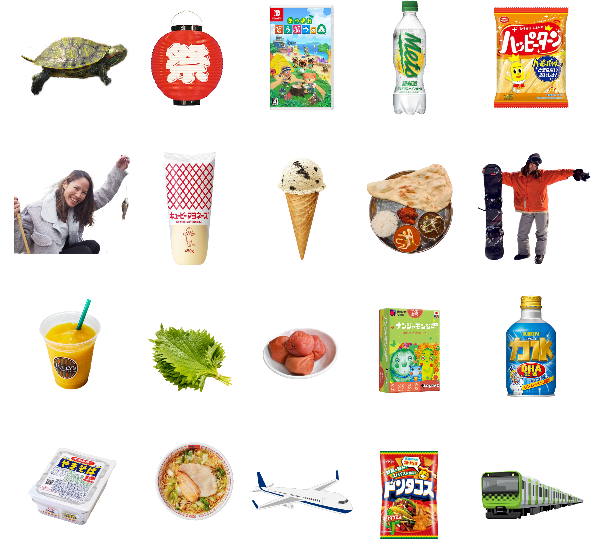
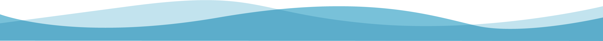

サリバン 奈々子

東京都出身。オーストラリア人の夫と2人の子供の4人で暮らしています。 今まではアパレル販売員やフィットネスのインストラクター、旅行業界を経験してきましたが、SNSで”在宅ワーク可能”と偶然見かけたのがきっかけでWebデザイナーの職種を知りました。 趣味で工作やモノづくりが好きな事から、仕事内容に魅力を感じ「好きなこと」を見つけた！仕事にしたい！とオンラインスクールに通い学びました。自分のイメージが形になる事、作り上げていく工程に魅力を感じています。 ご要望や目的に合わせて丁寧に作成いたします。こだわりの詰まったデザイン・コーデイングをご提供させていただきます。

カメ*お祭り*どうぶつの森*メッツ*ハッピーターン*釣り*マヨネーズ*クッキーアンドクリームアイス*インドカレー*スノーボード*スムージー*大葉*梅*ナンジャモンジャ*力水*ペヤング*かむくらラーメン*海外旅行*ドンタコス*電車
